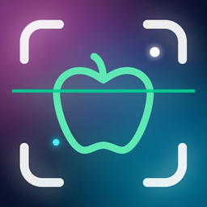

This Privacy Policy describes how KcalzCounter ("the App", "we", "our") handles information when you use our iOS calorie and nutrition tracking application. We designed KcalzCounter with privacy in mind: your personal health information is primarily stored on your device and is not sent to our own servers.
To personalize your calorie and macronutrient goals, the App asks you for:
This information is stored locally on your device. If you have iCloud enabled, it may also be backed up to your personal iCloud account under Apple's standard encryption and privacy terms.
Everything you log — meals, individual foods, portions, water intake and daily calorie entries — is kept on your device. We do not receive, read or store this information on any server we operate.
With your explicit permission, KcalzCounter can read and write data to the Apple Health app, specifically:
HealthKit data stays on your device (and optionally in your encrypted iCloud Health backup). The App never transmits HealthKit data to our servers or to third parties. You may revoke HealthKit permissions at any time in Settings → Privacy & Security → Health → KcalzCounter.
If you allow notifications, reminders (meal times, water intake, weigh-in, etc.) are scheduled locally by iOS. We do not use push notifications from our own servers.
When you use the image scan feature to identify a meal, the photo you capture or select is sent to OpenAI's API for analysis and nutritional estimation. We do not attach your name, account ID or health profile to this request. The image is used only to return a meal estimate to your device. OpenAI's handling of API inputs is governed by their own terms — see OpenAI's Privacy Policy.
If you do not wish to share images with OpenAI, simply do not use the image scan feature and add meals manually instead.
Paid plans are processed entirely by Apple through the App Store and StoreKit. We receive a transaction receipt to validate your subscription status, but we do not receive your payment card, full billing address or other financial data. Billing is governed by Apple's Media Services terms.
The App may use Firebase (provided by Google) to collect anonymous crash reports and basic usage diagnostics, so we can fix bugs and improve stability. These reports do not include your name, email, meals, weight or any health data. See Firebase's Privacy & Security information.
KcalzCounter is not directed to children under 13 (or the minimum age required in your country). We do not knowingly collect data from children. If you believe a child has provided data to us, please contact us so we can take appropriate action.
Because your data is stored on your device, you are in control of it:
Depending on where you live (e.g., EU/EEA under GDPR, Brazil under LGPD, California under CCPA), you may have additional rights, including the right to request information, correction or deletion of personal data we may process, and the right to lodge a complaint with your local data protection authority.
Local data is retained on your device until you delete it or uninstall the App. Image scan requests sent to OpenAI are retained according to OpenAI's retention policy. Anonymous diagnostic data in Firebase is retained according to Google's retention settings.
We use HTTPS for all network requests and apply SSL certificate pinning for calls to OpenAI to reduce the risk of interception. No system is 100% secure, but we follow reasonable industry practices to protect data in transit.
We may update this Privacy Policy from time to time. When we do, we will update the "Last updated" date at the top. Material changes will be communicated inside the App or on our website.
If you have any questions, requests or concerns about this Privacy Policy, contact:
KcalzCounter
Email: felipe.demetrius@gmail.com
Esta Política de Privacidade descreve como o KcalzCounter ("o Aplicativo", "nós") trata informações quando você usa nosso aplicativo iOS de contagem de calorias e acompanhamento nutricional. O KcalzCounter foi desenhado com privacidade em mente: suas informações pessoais e de saúde ficam, sobretudo, armazenadas no seu dispositivo e não são enviadas a servidores próprios nossos.
Para personalizar suas metas de calorias e macronutrientes, o Aplicativo solicita:
Essas informações são armazenadas localmente no seu dispositivo. Se o iCloud estiver ativado, podem também ser copiadas para sua conta pessoal do iCloud, sob os termos de criptografia e privacidade padrão da Apple.
Tudo o que você registra — refeições, alimentos individuais, porções, ingestão de água e calorias diárias — permanece no seu dispositivo. Não recebemos, lemos ou armazenamos essas informações em qualquer servidor operado por nós.
Com sua permissão expressa, o KcalzCounter pode ler e escrever dados no aplicativo Saúde (HealthKit) da Apple, especificamente:
Os dados do HealthKit permanecem no seu dispositivo (e, opcionalmente, no backup criptografado do iCloud Saúde). O Aplicativo jamais transmite dados de HealthKit aos nossos servidores ou a terceiros. Você pode revogar as permissões a qualquer momento em Ajustes → Privacidade e Segurança → Saúde → KcalzCounter.
Se você autorizar notificações, os lembretes (horários de refeição, ingestão de água, pesagem etc.) são agendados localmente pelo iOS. Não utilizamos push notifications a partir de servidores próprios.
Ao usar o recurso de escaneamento de imagem para identificar uma refeição, a foto capturada ou selecionada é enviada à API da OpenAI para análise e estimativa nutricional. Não anexamos seu nome, ID de conta ou perfil de saúde a essa requisição. A imagem é utilizada apenas para devolver a estimativa da refeição ao seu dispositivo. O tratamento de dados de entrada pela OpenAI segue os termos deles — consulte a Política de Privacidade da OpenAI.
Se você preferir não compartilhar imagens com a OpenAI, basta não utilizar o recurso de escaneamento e adicionar as refeições manualmente.
Planos pagos são processados integralmente pela Apple, via App Store e StoreKit. Recebemos apenas o recibo da transação para validar o status da sua assinatura; não recebemos dados de cartão, endereço completo de cobrança ou outras informações financeiras. O faturamento é regido pelos Termos de Serviços de Mídia da Apple.
O Aplicativo pode utilizar o Firebase (fornecido pelo Google) para coletar relatórios anônimos de falhas e diagnósticos básicos de uso, para corrigirmos bugs e melhorar a estabilidade. Esses relatórios não incluem seu nome, e-mail, refeições, peso ou qualquer dado de saúde. Veja as informações de Privacidade e Segurança do Firebase.
O KcalzCounter não se destina a crianças menores de 13 anos (ou da idade mínima exigida no seu país). Não coletamos dados de crianças de forma consciente. Se acreditar que uma criança nos forneceu dados, entre em contato para tomarmos as medidas cabíveis.
Como seus dados ficam no seu dispositivo, você tem controle sobre eles:
Conforme a sua localização (ex.: UE/EEE sob o GDPR, Brasil sob a LGPD, Califórnia sob o CCPA), você pode ter direitos adicionais, incluindo o de solicitar informações, correção ou exclusão de dados pessoais que porventura tratemos, e de apresentar reclamação à autoridade de proteção de dados competente (no Brasil, a ANPD).
Dados locais permanecem no seu dispositivo até que você os exclua ou desinstale o Aplicativo. Requisições de escaneamento enviadas à OpenAI são mantidas conforme a política de retenção da OpenAI. Dados anônimos de diagnóstico no Firebase são mantidos conforme as configurações de retenção do Google.
Usamos HTTPS em todas as requisições de rede e aplicamos SSL certificate pinning nas chamadas para a OpenAI, reduzindo o risco de interceptação. Nenhum sistema é 100% seguro, mas seguimos práticas razoáveis de mercado para proteger dados em trânsito.
Podemos atualizar esta Política de Privacidade periodicamente. Quando isso ocorrer, atualizaremos a data de "Última atualização" no topo. Mudanças relevantes serão comunicadas dentro do Aplicativo ou no nosso site.
Para dúvidas, solicitações ou preocupações sobre esta Política, entre em contato:
KcalzCounter
E-mail: felipe.demetrius@gmail.com